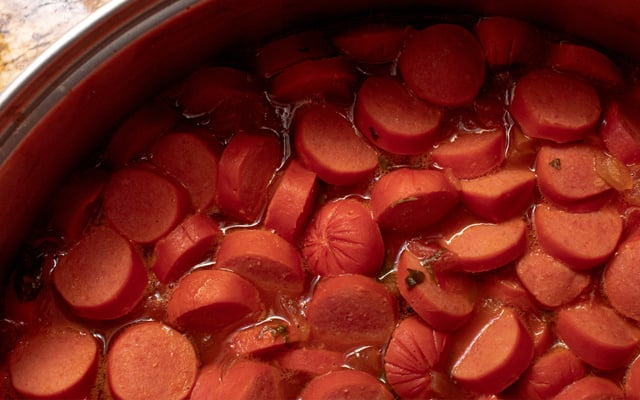

SAUSAGE IN TOMATO SAUCE

This dish is easy to make, very flavorful and its creaminess will win over your heart!
After it's done, you can eat it with pasta or put it in bread. Both ways are delicious.
To make it, follow the steps below.
INGREDIENTS
- 1 lb (about ½ kg) of your preferred sausages, sliced into thin rounds
- 2 onions, sliced into rings
- 6 tablespoons of tomato paste
- 2 tablespoons of water
- 1 tablespoon of margarine (or butter)
INSTRUCTIONS
- In a pan, heat the margarine (or butter) and add the sliced onions.
- Sauté the onions for about 1 minute, then add the sliced sausages.
- Cook the sausages for another minute, then stir in the tomato paste and water.
- Let the mixture simmer for about 3 to 4 minutes. If you'd like a thinner sauce, add a bit more water.
- Season with salt to taste.
- As previously mentioned, this dish is perfect to serve with either bread, pasta or white rice.
Home